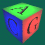

The acgmake tool provides the following features:
-
Recursively compile a whole source code tree with one command. For each directory a shared library is generated. You can easily share code/libs of several directories of your project.
-
Different functionality is provided by different modules:
-
C++ compilation,
-
Full Qt support: designer tool
uic and signal/slot preprocessor moc.
-
Latex support: automatically deals with latex, bibtex, dvips, ps2pdf.
-
Doxygen support (of course, see this document).
-
You do not have to specify source or target files or which files contain a
main() function and will therefore lead to an executable. This information is found automatically.
-
You do not have to care about include paths, linking paths or library names. Just tell acgmake: "I wan't to use Qt and OpenGL".
-
Switch compilation modes (like debug, optimized, profile version) or linking modes (shared or static) by command line parameters.
-
Switch tools/compilers by one command line parameter.
-
All resulting object files and executables are packed in so-called build-directories depending on operating system and compilation modes. Hence you can compile your projects on different operating systems simultaneously or keep debug and release version at the same time.
-
No fancy system requirements: based on GNU
make and bash only.
-
Since
acgmake is based on GNU make the makefile syntax stays the same. Users familiar with GNU make will not have to learn a new syntax.
-
Highly customizable: new functionality can be added by providing additional packages and modules.

Project acgmake,
© Computer Graphics Group, RWTH Aachen.
Documentation generated using
doxygen
.